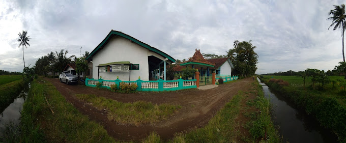

Nama Sekolah : SD Negeri Rejosari
NPSN : 20341553
Jenjang Pendidikan : SD
Status Sekolah : Negeri
Alamat Sekolah : RT 02 RW 04, Rejosari, Grabag, Purworejo
SK Pendirian Sekolah : 421.2/035/IX/41/85
Tanggal SK Pendirian : 1985-02-01
Status Kepemilikan : Pemerintah Daerah
SK Izin Operasional : 421.2/035/IX/41/85
Tgl SK Izin Operasional : 1985-02-01
Kebutuhan Khusus Dilayani : Tidak ada
Nomor Rekening : 2147483647
Nama Bank : BPD Jawa Tengah
Cabang KCP/Unit: BPD Jawa Tengah Cabnag KCP Pasar Kutoarjo
Rekening Atas Nama : BOSSDNREJOSARIGRABAG
Luas Tanah Milik(m2) : 3m2
NPWP : 001249416531000
Waktu Penyelenggaraan : Pagi
Bersedia Menerima Bos? : Bersedia Menerima
Sertifikasi ISO : Belum Bersertifikat
Sumber Listrik : PLN
Daya Listrik(watt) : 900
Akses Internet : Smartfren
Kepala Sekolah : Tukino, S.Pd
Operator Pendataan : Syaiful Anwar, S.Pd
Akreditasi : B
Kurikulum< : Kurikulum 2013/li>